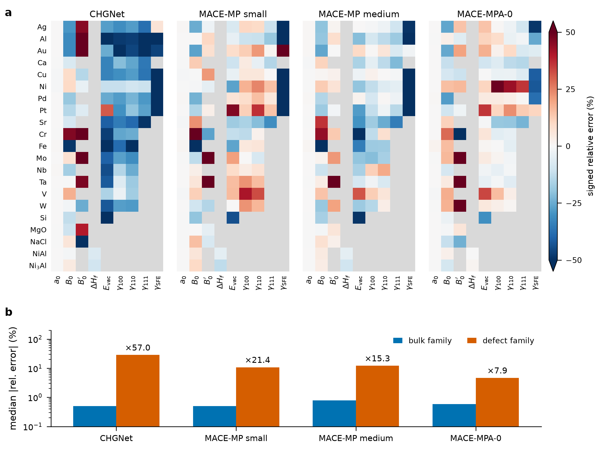
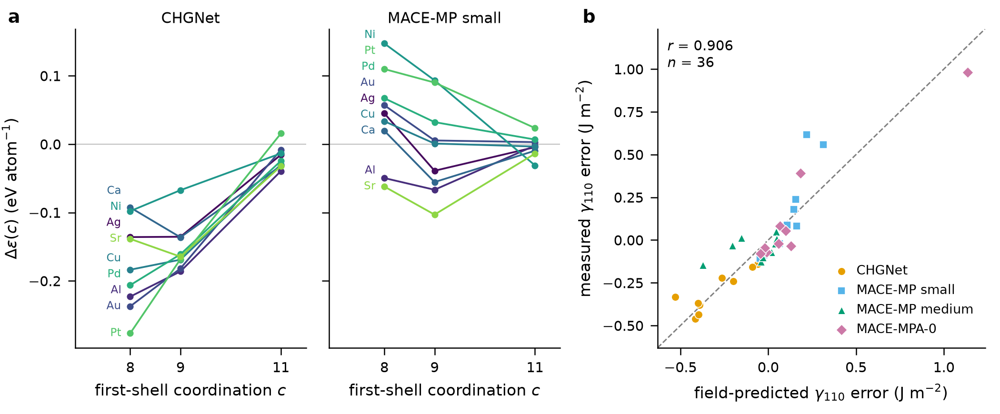
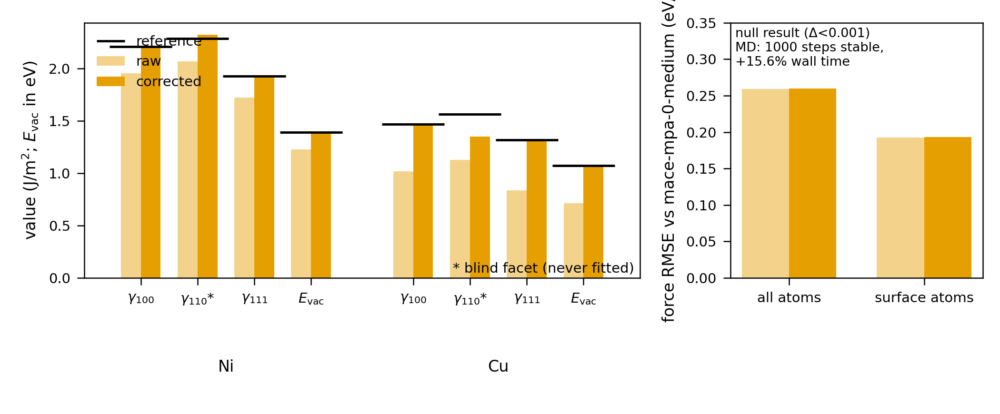

A smooth, environment-resolved error field underlies the systematic property errors of universal machine-learned interatomic potentials
Foundation machine-learned interatomic potentials (uMLIPs) match near-DFT accuracy on bulk properties but fail on the surfaces, vacancies, and planar faults that dominate real materials practice. We show that those failures are not independent: they follow a smooth field over local atomic environments. The field is measured from three standard observables, predicts a fourth never-fitted observable with zero adjustable parameters, and converts into a run-time correction that runs beside a live calculator.
Published
Evidence summary
- Data. 21 materials × 4 uMLIPs × up to 9 properties = 228 provenance-annotated reference values. Four models: CHGNet 0.4.2, MACE-MP-0 small, MACE-MP-0 medium, MACE-MPA-0.
- Method. Measure signed errors on γ₁₀₀, γ₁₁₁, and vacancy formation energy; fit a per-(model, material) cubic field over first-shell coordination; predict the blind γ₁₁₀ error at coordination 7.
- Result. Across 36 (model, material) cells, the blind prediction attains r = 0.906 (material-clustered 95 % CI [0.82, 0.96]), exceeding all 10,000 within-model material permutations (p = 10⁻⁴).
- Run-time correction. The field inverts into an additive energy correction beside CHGNet. It recovers fitted observables exactly, improves the blind γ₁₁₀ facet (Ni: 9.7 % → 1.5 %; Cu: 28.0 % → 13.7 %), leaves bulk structure untouched, and runs stable MD at 15.6 % overhead.
- Verdict. Supported for fcc first-shell environments, with explicit machine-checked boundaries where no monotone correction exists.
The error landscape

Bulk observables (lattice constants, formation enthalpies) are accurate: median relative errors < 0.5 % and ≈ 3 % respectively. Defect-family observables — surface energies, vacancy energies, stacking-fault energies — err 15–60× worse. This defect/bulk asymmetry is the signature the field explains.
Rankings survive where magnitudes fail
Across materials, predicted rankings track reference rankings closely for surfaces (Spearman ρ = 0.88–1.00), vacancies (0.84–0.93), and bulk moduli (0.82–0.85), even while magnitude errors reach tens of percent. Ordinal faithfulness is the invertibility condition for any monotone error model; its selective failure marks where no such model can apply.
The field and its blind test

The core hypothesis is simple: the model's energy error is a smooth function of local coordination, accumulated per atom.
E_model(config) − E_ref(config) ≈ Σᵢ Δε(cᵢ), with Δε(12) ≡ 0 for fcc bulk.
Each property samples the field at its characteristic coordinations: γ₁₀₀ at c = 8, γ₁₁₁ at c = 9, vacancy first neighbors at c = 11. The never-fitted γ₁₁₀ error probes coordination 7. Across 36 cells the prediction is r = 0.906 — not because the model is fitted to γ₁₁₀, but because the field shape is measured elsewhere and extrapolated.
From field to run time

Because the field is a function of environments, its inverse is an additive energy with analytic forces. Deployed beside a live CHGNet calculator:
- Statics. Fitted observables return exactly; blind γ₁₁₀ errors drop sharply.
- Forces (null result). Near-equilibrium force RMSE is unchanged — the v1 field is an energy-level correction; correcting forces requires a continuous-coordinate extension.
- Dynamics. 1,000 steps of 300 K Langevin NVT on Ni(110) run stably with 15.6 % wall-time overhead.
Provable boundaries
Correction has jurisdiction only where order survives. Where rankings invert — for example, MACE-MP-small ordering SFE(Ni) ≤ SFE(Al) while references order the reverse — we prove, machine-checked, that no monotone correction can recover both. The proof kernel certifies data-analysis arithmetic and stated inequalities over SHA-256-provenance data; 100+ Lean 4 theorems, zero sorry.
Conclusion
The field is the first concrete instance of Lupine's larger program: measure the structured wrongness of a predictor, prove it, correct it, and make the evidence inspectable.